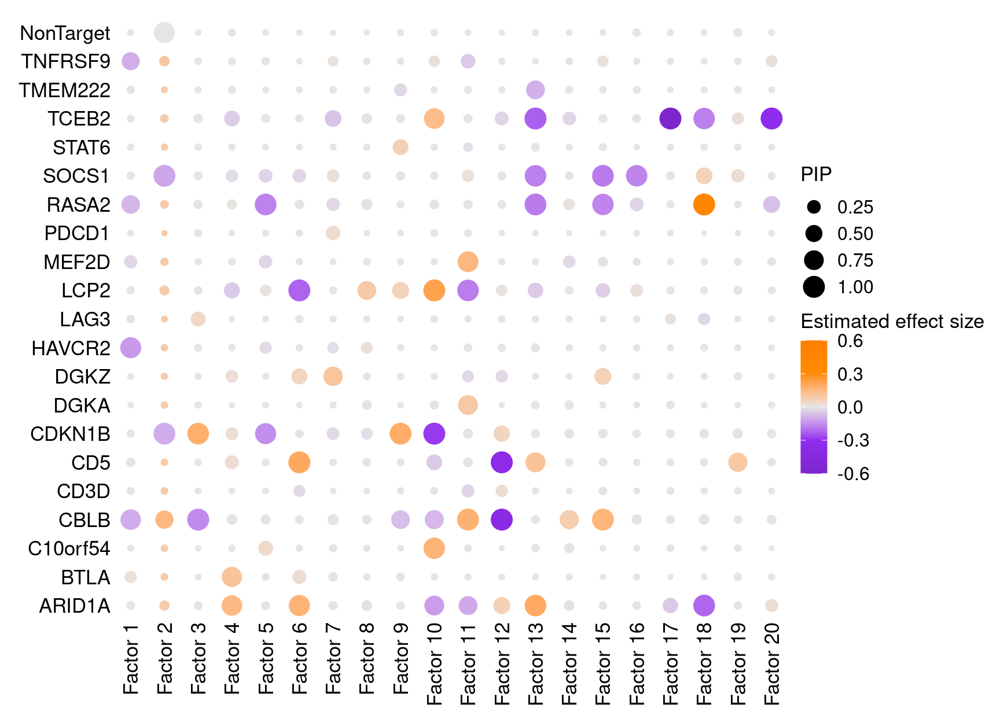
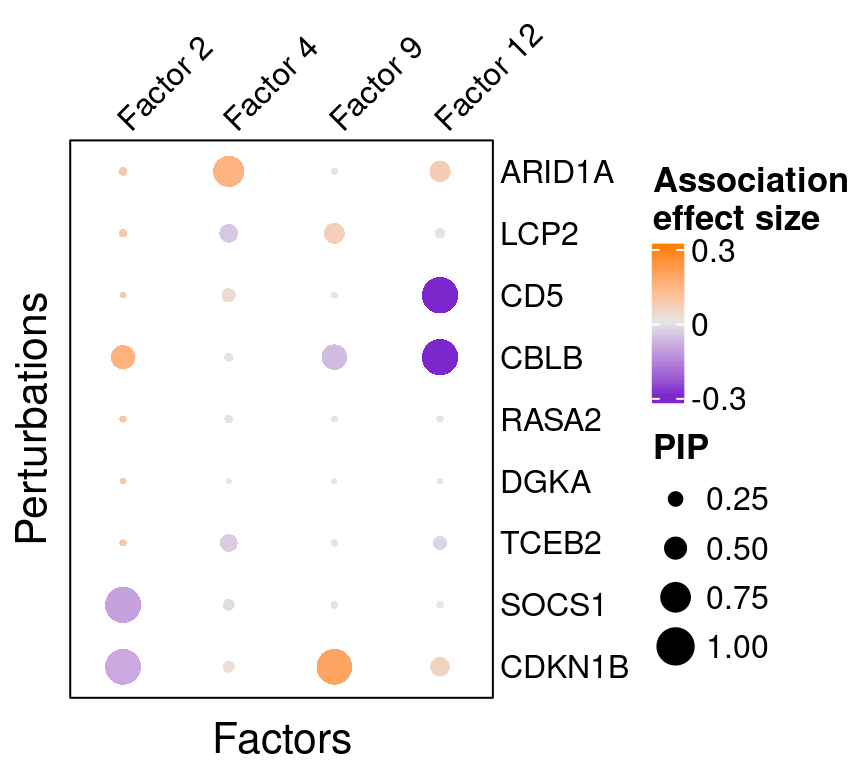
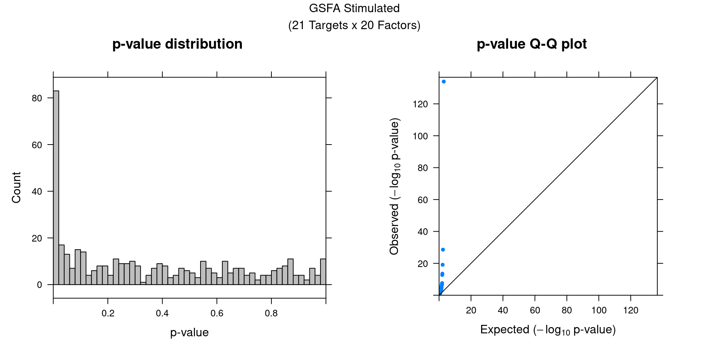
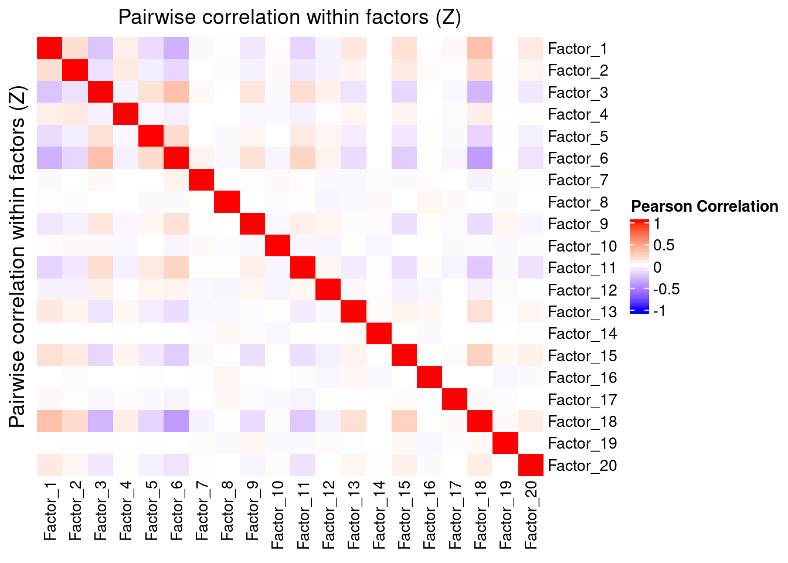
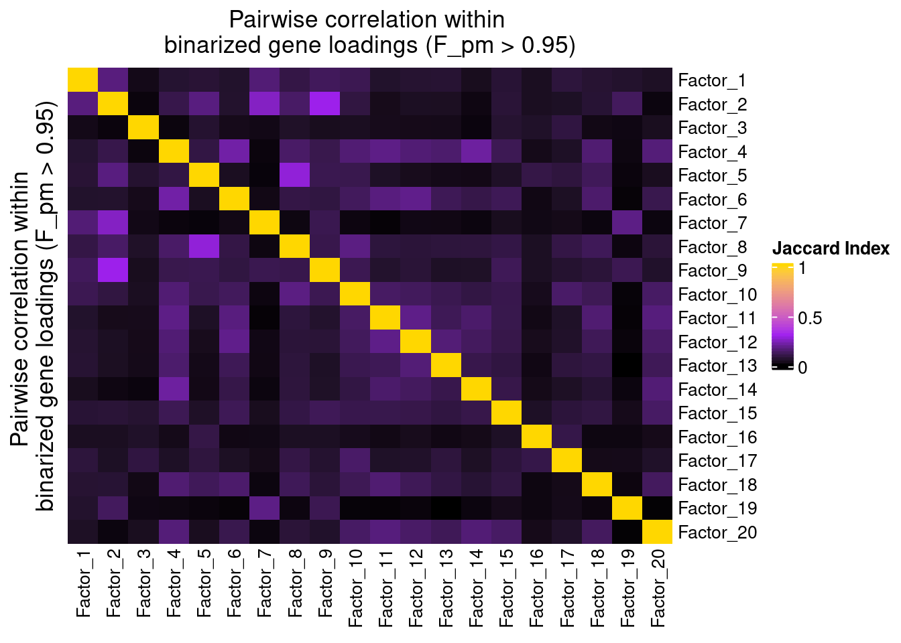
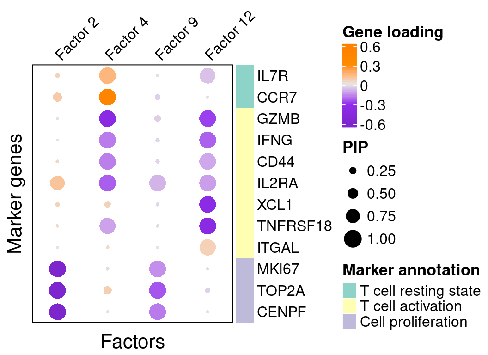
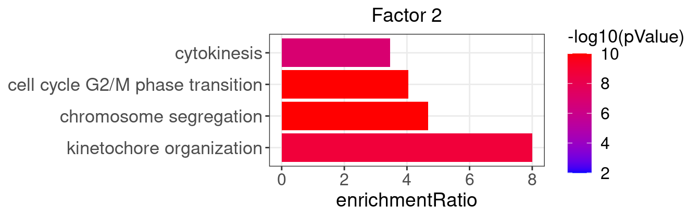
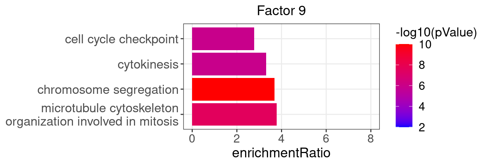
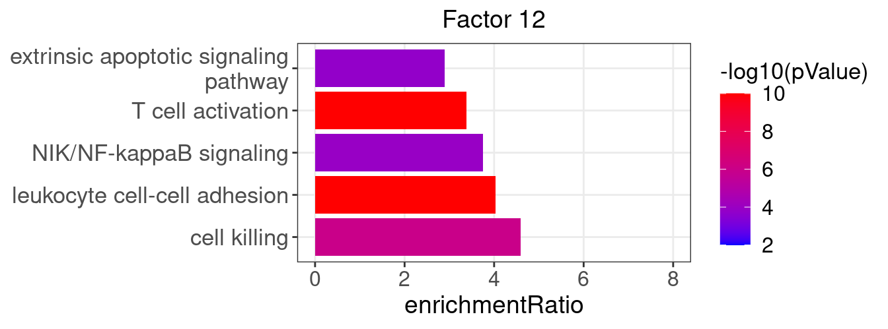

GSFA Results on CD8+ T Cell CROP-seq Data
Kaixuan Luo
Last updated: 2022-08-01
Checks: 7 0
Knit directory: GSFA_analysis/
This reproducible R Markdown analysis was created with workflowr (version 1.7.0). The Checks tab describes the reproducibility checks that were applied when the results were created. The Past versions tab lists the development history.
Great! Since the R Markdown file has been committed to the Git repository, you know the exact version of the code that produced these results.
Great job! The global environment was empty. Objects defined in the global environment can affect the analysis in your R Markdown file in unknown ways. For reproduciblity it's best to always run the code in an empty environment.
The command set.seed(20220524) was run prior to running the code in the R Markdown file. Setting a seed ensures that any results that rely on randomness, e.g. subsampling or permutations, are reproducible.
Great job! Recording the operating system, R version, and package versions is critical for reproducibility.
Nice! There were no cached chunks for this analysis, so you can be confident that you successfully produced the results during this run.
Great job! Using relative paths to the files within your workflowr project makes it easier to run your code on other machines.
Great! You are using Git for version control. Tracking code development and connecting the code version to the results is critical for reproducibility.
The results in this page were generated with repository version aba9f4a. See the Past versions tab to see a history of the changes made to the R Markdown and HTML files.
Note that you need to be careful to ensure that all relevant files for the analysis have been committed to Git prior to generating the results (you can use wflow_publish or wflow_git_commit). workflowr only checks the R Markdown file, but you know if there are other scripts or data files that it depends on. Below is the status of the Git repository when the results were generated:
Ignored files:
Ignored: .Rhistory
Ignored: .Rproj.user/
Untracked files:
Untracked: analysis/interpret_gsfa_LUHMES.Rmd
Untracked: analysis/spca_LUHMES_data.Rmd
Untracked: analysis/twostep_clustering_LUHMES_data.Rmd
Untracked: code/music_LUHMES_Yifan.R
Untracked: code/plotting_functions.R
Untracked: code/run_music_LUHMES.R
Untracked: code/run_music_LUHMES_data.sbatch
Untracked: code/run_sceptre_LUHMES_data.sbatch
Untracked: code/run_sceptre_Tcells_stimulated_data.sbatch
Untracked: code/run_sceptre_Tcells_unstimulated_data.sbatch
Untracked: code/run_spca_LUHMES.R
Untracked: code/run_spca_TCells.R
Untracked: code/sceptre_LUHMES_data.R
Untracked: code/sceptre_Tcells_stimulated_data.R
Untracked: code/sceptre_Tcells_unstimulated_data.R
Untracked: code/seurat_sim_fpr_tpr.R
Unstaged changes:
Modified: analysis/music_LUHMES_data.Rmd
Modified: analysis/music_TCells_data.Rmd
Modified: analysis/sceptre_LUHMES_data.Rmd
Modified: code/run_sceptre_cropseq_data.sbatch
Modified: code/sceptre_analysis.R
Note that any generated files, e.g. HTML, png, CSS, etc., are not included in this status report because it is ok for generated content to have uncommitted changes.
These are the previous versions of the repository in which changes were made to the R Markdown (analysis/gsfa_TCells_data.Rmd) and HTML (docs/gsfa_TCells_data.html) files. If you've configured a remote Git repository (see ?wflow_git_remote), click on the hyperlinks in the table below to view the files as they were in that past version.
| File | Version | Author | Date | Message |
|---|---|---|---|---|
| Rmd | aba9f4a | kevinlkx | 2022-08-01 | reproduce GSFA results on T cells data (without DEG results) |
| Rmd | c044fb0 | kevinlkx | 2022-08-01 | wflow_rename("compare_gsfa_music_TCells.Rmd", "gsfa_TCells_data.Rmd") |
| html | c044fb0 | kevinlkx | 2022-08-01 | wflow_rename("compare_gsfa_music_TCells.Rmd", "gsfa_TCells_data.Rmd") |
GSFA results
The processed dataset consists of 10677 unstimulated T cells and 14278 stimulated T cells.
They were subject to belong to one of the 21 perturbation conditions (CRISPR knock-out of 20 regulators of T cell proliferation or immune checkpoint genes, and negative control).
Top 6000 genes ranked by deviance statistics were kept. A modified two-group GSFA was performed on the data with 20 factors specified, and perturbation effects estimated separately for cells with/without TCR stimulation.
Load necessary packages and data
library(data.table)
library(Matrix)
library(tidyverse)
library(ggplot2)
theme_set(theme_bw() + theme(plot.title = element_text(size = 14, hjust = 0.5),
axis.title = element_text(size = 14),
axis.text = element_text(size = 12),
legend.title = element_text(size = 13),
legend.text = element_text(size = 12),
panel.grid.minor = element_blank())
)
library(gridExtra)
library(ComplexHeatmap)
library(kableExtra)
library(WebGestaltR)
source("code/plotting_functions.R")The first thing we need is the output of GSFA fit_gsfa_multivar_2groups() run. The lighter version containing just the posterior mean estimates and LFSR of perturbation-gene effects is enough.
data_folder <- "/project2/xinhe/yifan/Factor_analysis/Stimulated_T_Cells/"
fit <- readRDS(paste0(data_folder,
"gsfa_output_detect_01/all_uncorrected_by_group.use_negctrl/All.gibbs_obj_k20.svd_negctrl.restart.light.rds"))
gibbs_PM <- fit$posterior_means
lfsr_mat1 <- fit$lfsr1[, -ncol(fit$lfsr1)]
lfsr_mat0 <- fit$lfsr0[, -ncol(fit$lfsr0)]
total_effect1 <- fit$total_effect1[, -ncol(fit$total_effect1)]
total_effect0 <- fit$total_effect0[, -ncol(fit$total_effect0)]
KO_names <- colnames(lfsr_mat1)We also need the cell by perturbation matrix which was used as input \(G\) for GSFA.
metadata <- readRDS(paste0(data_folder, "processed_data/metadata.all_T_cells_merged.rds"))
G_mat <- metadata[, 4:24]Finally, we load the mapping from gene name to ENSEMBL ID for all 6k genes used in GSFA, as well as selected neuronal marker genes. This is specific to this study and analysis.
feature.names <- data.frame(fread(paste0(data_folder, "GSE119450_RAW/D1N/genes.tsv"),
header = FALSE), stringsAsFactors = FALSE)
genes_df <- feature.names[match(rownames(lfsr_mat1), feature.names$V1), ]
names(genes_df) <- c("ID", "Name")
interest_df <- readRDS(paste0(data_folder, "processed_data/selected_tcell_markers.rds"))Factor ~ Perturbation Associations
Perturbation effects on factors (stimulated cells)
Fisrt of all, we look at the estimated effects of gene perturbations on factors inferred by GSFA.
We found that targeting of 9 genes, ARID1A, CBLB, CD5, CDKN1B, DGKA, LCP2, RASA2, SOCS1, and TCEB2, has significant effects (PIP > 0.95) on at least 1 of the 20 inferred factors.
Estimated effects of perturbations on factors (Figure S4A):
dotplot_beta_PIP(t(gibbs_PM$Gamma1_pm), t(gibbs_PM$beta1_pm),
marker_names = KO_names,
reorder_markers = c(KO_names[KO_names!="NonTarget"], "NonTarget"),
inverse_factors = F) +
coord_flip()
| Version | Author | Date |
|---|---|---|
| c044fb0 | kevinlkx | 2022-08-01 |
Here is a closer look at the estimated effects of selected perturbations on selected factors (Figure 3A):
targets <- c("ARID1A", "LCP2", "CD5", "CBLB", "RASA2",
"DGKA", "TCEB2", "SOCS1", "CDKN1B")
complexplot_perturbation_factor(gibbs_PM$Gamma1_pm[-nrow(gibbs_PM$Gamma1_pm), ],
gibbs_PM$beta1_pm[-nrow(gibbs_PM$beta1_pm), ],
marker_names = KO_names, reorder_markers = targets,
reorder_factors = c(2, 4, 9, 12))
| Version | Author | Date |
|---|---|---|
| c044fb0 | kevinlkx | 2022-08-01 |
We can also assess the correlations between each pair of perturbation and inferred factor.
The distribution of correlation p values show significant signals in stimulated cells.
## Indices of stimulated cells:
stim_cells <-
(1:nrow(G_mat))[startsWith(rownames(G_mat), "D1S") |
startsWith(rownames(G_mat), "D2S")]
gibbs_res_tb <- make_gibbs_res_tb(gibbs_PM, G_mat, compute_pve = F,
cell_indx = stim_cells)
heatmap_matrix <- gibbs_res_tb %>% select(starts_with("pval"))
rownames(heatmap_matrix) <- 1:nrow(heatmap_matrix)
colnames(heatmap_matrix) <- colnames(G_mat)
summ_pvalues(unlist(heatmap_matrix),
title_text = "GSFA Stimulated\n(21 Targets x 20 Factors)")
| Version | Author | Date |
|---|---|---|
| c044fb0 | kevinlkx | 2022-08-01 |
Perturbation effects on factors (unstimulated cells)
In unstimulated cells, only three pairs of associations were detected at PIP > 0.95, which is unsurprising given the role of these targeted genes in regulating T cell responses (Figure S4B):
dotplot_beta_PIP(t(gibbs_PM$Gamma0_pm), t(gibbs_PM$beta0_pm),
marker_names = KO_names,
reorder_markers = c(KO_names[KO_names!="NonTarget"], "NonTarget"),
inverse_factors = F) +
coord_flip()
| Version | Author | Date |
|---|---|---|
| c044fb0 | kevinlkx | 2022-08-01 |
Factor Interpretation
Correlation within factors
Since the GSFA model does not enforce orthogonality among factors, we first inspect the pairwise correlation within them to see if there is any redundancy. As we can see below, the inferred factors are mostly independent of each other.
plot_pairwise.corr_heatmap(input_mat_1 = gibbs_PM$Z_pm,
corr_type = "pearson",
name_1 = "Pairwise correlation within factors (Z)",
label_size = 10)
| Version | Author | Date |
|---|---|---|
| c044fb0 | kevinlkx | 2022-08-01 |
plot_pairwise.corr_heatmap(input_mat_1 = (gibbs_PM$F_pm > 0.95) * 1,
corr_type = "jaccard",
name_1 = "Pairwise correlation within \nbinarized gene loadings (F_pm > 0.95)",
label_size = 10)
| Version | Author | Date |
|---|---|---|
| c044fb0 | kevinlkx | 2022-08-01 |
Gene loading in factors
To understand these latent factors, we inspect the loadings (weights) of several marker genes for T cell activation or proliferation states in them.
| gene_name | type | protein_name | gene_ID |
|---|---|---|---|
| IL7R | T cell resting state | IL-7 receptor | ENSG00000168685 |
| CCR7 | T cell resting state | C-C motif chemokine receptor 7 | ENSG00000126353 |
| GZMB | T cell activation | Granzyme B | ENSG00000100453 |
| IFNG | T cell activation | Interferon gamma | ENSG00000111537 |
| CD44 | T cell activation | CD44 | ENSG00000026508 |
| IL2RA | T cell activation | IL-2 receptor | ENSG00000134460 |
| XCL1 | T cell activation | X-C motif chemokine ligand 1 | ENSG00000143184 |
| TNFRSF18 | T cell activation | GITR | ENSG00000186891 |
| ITGAL | T cell activation | LFA-1 | ENSG00000005844 |
| MKI67 | Cell proliferation | Marker of proliferation Ki-67 | ENSG00000148773 |
| TOP2A | Cell proliferation | DNA topoisomerase II alpha | ENSG00000131747 |
| CENPF | Cell proliferation | Centromere protein F | ENSG00000117724 |
We visualize both the gene PIPs (dot size) and gene weights (dot color) in all factors (Figure S4C):
complexplot_gene_factor(genes_df, interest_df, gibbs_PM$F_pm, gibbs_PM$W_pm)
| Version | Author | Date |
|---|---|---|
| c044fb0 | kevinlkx | 2022-08-01 |
A closer look at some factors that are associated with perturbations (Figure 3C):
complexplot_gene_factor(genes_df, interest_df, gibbs_PM$F_pm, gibbs_PM$W_pm,
reorder_factors = c(2, 4, 9, 12))
| Version | Author | Date |
|---|---|---|
| c044fb0 | kevinlkx | 2022-08-01 |
GO enrichment analysis in factors
To further characterize these latent factors, we perform GO (gene ontology) enrichment analysis of genes loaded on the factors using WebGestalt.
Foreground genes: Genes w/ non-zero loadings in each factor (gene PIP > 0.95);
Background genes: all 6000 genes used in GSFA;
Statistical test: hypergeometric test (over-representation test);
Gene sets: GO Slim "Biological Process" (non-redundant).
## The "WebGestaltR" tool needs Internet connection.
enrich_db <- "geneontology_Biological_Process_noRedundant"
PIP_mat <- gibbs_PM$F_pm
enrich_res_by_factor <- list()
for (i in 1:ncol(PIP_mat)){
enrich_res_by_factor[[i]] <-
WebGestaltR::WebGestaltR(enrichMethod = "ORA",
organism = "hsapiens",
enrichDatabase = enrich_db,
interestGene = genes_df[PIP_mat[, i] > 0.95, ]$ID,
interestGeneType = "ensembl_gene_id",
referenceGene = genes_df$ID,
referenceGeneType = "ensembl_gene_id",
isOutput = F)
}Several GO “biological process” terms related to immune responses or cell cycle are enriched in factors 2, 4, 9, and 12 (Figure 3D):
factor_indx <- 2
terms_of_interest <- c("kinetochore organization", "chromosome segregation",
"cell cycle G2/M phase transition", "cytokinesis")
barplot_top_enrich_terms(enrich_res_by_factor[[factor_indx]],
terms_of_interest = terms_of_interest,
str_wrap_length = 50) +
labs(title = paste0("Factor ", factor_indx))
| Version | Author | Date |
|---|---|---|
| c044fb0 | kevinlkx | 2022-08-01 |
factor_indx <- 9
terms_of_interest <- c("microtubule cytoskeleton organization involved in mitosis",
"chromosome segregation", "cytokinesis", "cell cycle checkpoint")
barplot_top_enrich_terms(enrich_res_by_factor[[factor_indx]],
terms_of_interest = terms_of_interest,
str_wrap_length = 35) +
labs(title = paste0("Factor ", factor_indx))
| Version | Author | Date |
|---|---|---|
| c044fb0 | kevinlkx | 2022-08-01 |
factor_indx <- 4
terms_of_interest <- c("response to chemokine", "cell killing", "leukocyte migration",
"response to interferon-gamma", "cytokine secretion")
barplot_top_enrich_terms(enrich_res_by_factor[[factor_indx]],
terms_of_interest = terms_of_interest,
str_wrap_length = 35) +
labs(title = paste0("Factor ", factor_indx))
| Version | Author | Date |
|---|---|---|
| c044fb0 | kevinlkx | 2022-08-01 |
factor_indx <- 12
terms_of_interest <- c("leukocyte cell-cell adhesion", "extrinsic apoptotic signaling pathway",
"cell killing", "T cell activation", "NIK/NF-kappaB signaling")
barplot_top_enrich_terms(enrich_res_by_factor[[factor_indx]],
terms_of_interest = terms_of_interest,
str_wrap_length = 35) +
labs(title = paste0("Factor ", factor_indx))
| Version | Author | Date |
|---|---|---|
| c044fb0 | kevinlkx | 2022-08-01 |
Session Information
sessionInfo()R version 4.0.4 (2021-02-15)
Platform: x86_64-pc-linux-gnu (64-bit)
Running under: Scientific Linux 7.4 (Nitrogen)
Matrix products: default
BLAS/LAPACK: /software/openblas-0.3.13-el7-x86_64/lib/libopenblas_haswellp-r0.3.13.so
locale:
[1] LC_CTYPE=en_US.UTF-8 LC_NUMERIC=C
[3] LC_TIME=en_US.UTF-8 LC_COLLATE=en_US.UTF-8
[5] LC_MONETARY=en_US.UTF-8 LC_MESSAGES=en_US.UTF-8
[7] LC_PAPER=en_US.UTF-8 LC_NAME=C
[9] LC_ADDRESS=C LC_TELEPHONE=C
[11] LC_MEASUREMENT=en_US.UTF-8 LC_IDENTIFICATION=C
attached base packages:
[1] grid stats graphics grDevices utils datasets methods
[8] base
other attached packages:
[1] lattice_0.20-45 WebGestaltR_0.4.4 kableExtra_1.3.4
[4] ComplexHeatmap_2.6.2 gridExtra_2.3 forcats_0.5.1
[7] stringr_1.4.0 dplyr_1.0.8 purrr_0.3.4
[10] readr_2.1.2 tidyr_1.2.0 tibble_3.1.6
[13] ggplot2_3.3.5 tidyverse_1.3.1 Matrix_1.4-1
[16] data.table_1.14.2
loaded via a namespace (and not attached):
[1] matrixStats_0.61.0 fs_1.5.2 lubridate_1.8.0
[4] doParallel_1.0.17 webshot_0.5.2 RColorBrewer_1.1-3
[7] httr_1.4.2 rprojroot_2.0.2 doRNG_1.8.2
[10] tools_4.0.4 backports_1.4.1 bslib_0.3.1
[13] utf8_1.2.2 R6_2.5.1 DBI_1.1.2
[16] BiocGenerics_0.36.1 colorspace_2.0-3 GetoptLong_1.0.5
[19] withr_2.5.0 tidyselect_1.1.2 compiler_4.0.4
[22] git2r_0.30.1 cli_3.2.0 rvest_1.0.2
[25] Cairo_1.5-15 xml2_1.3.3 labeling_0.4.2
[28] sass_0.4.1 scales_1.2.0 apcluster_1.4.10
[31] systemfonts_1.0.4 digest_0.6.29 svglite_2.0.0
[34] rmarkdown_2.13 pkgconfig_2.0.3 htmltools_0.5.2
[37] highr_0.9 dbplyr_2.1.1 fastmap_1.1.0
[40] rlang_1.0.2 GlobalOptions_0.1.2 readxl_1.4.0
[43] rstudioapi_0.13 farver_2.1.0 shape_1.4.6
[46] jquerylib_0.1.4 generics_0.1.2 jsonlite_1.8.0
[49] magrittr_2.0.3 Rcpp_1.0.9 munsell_0.5.0
[52] S4Vectors_0.28.1 fansi_1.0.3 lifecycle_1.0.1
[55] stringi_1.7.6 whisker_0.4 yaml_2.3.5
[58] plyr_1.8.6 parallel_4.0.4 promises_1.2.0.1
[61] crayon_1.5.1 haven_2.5.0 pander_0.6.5
[64] circlize_0.4.14 hms_1.1.1 knitr_1.38
[67] pillar_1.7.0 igraph_1.2.11 rjson_0.2.21
[70] rngtools_1.5.2 reshape2_1.4.4 codetools_0.2-18
[73] stats4_4.0.4 reprex_2.0.1 glue_1.6.2
[76] evaluate_0.15 modelr_0.1.8 foreach_1.5.2
[79] png_0.1-7 vctrs_0.4.1 tzdb_0.3.0
[82] httpuv_1.6.5 cellranger_1.1.0 gtable_0.3.0
[85] clue_0.3-60 assertthat_0.2.1 xfun_0.30
[88] broom_0.8.0 later_1.3.0 viridisLite_0.4.0
[91] iterators_1.0.14 IRanges_2.24.1 cluster_2.1.2
[94] workflowr_1.7.0 ellipsis_0.3.2
sessionInfo()R version 4.0.4 (2021-02-15) Platform: x86_64-pc-linux-gnu (64-bit) Running under: Scientific Linux 7.4 (Nitrogen)
Matrix products: default BLAS/LAPACK: /software/openblas-0.3.13-el7-x86_64/lib/libopenblas_haswellp-r0.3.13.so
locale: [1] LC_CTYPE=en_US.UTF-8 LC_NUMERIC=C
[3] LC_TIME=en_US.UTF-8 LC_COLLATE=en_US.UTF-8
[5] LC_MONETARY=en_US.UTF-8 LC_MESSAGES=en_US.UTF-8
[7] LC_PAPER=en_US.UTF-8 LC_NAME=C
[9] LC_ADDRESS=C LC_TELEPHONE=C
[11] LC_MEASUREMENT=en_US.UTF-8 LC_IDENTIFICATION=C
attached base packages: [1] grid stats graphics grDevices utils datasets methods
[8] base
other attached packages: [1] lattice_0.20-45 WebGestaltR_0.4.4 kableExtra_1.3.4
[4] ComplexHeatmap_2.6.2 gridExtra_2.3 forcats_0.5.1
[7] stringr_1.4.0 dplyr_1.0.8 purrr_0.3.4
[10] readr_2.1.2 tidyr_1.2.0 tibble_3.1.6
[13] ggplot2_3.3.5 tidyverse_1.3.1 Matrix_1.4-1
[16] data.table_1.14.2
loaded via a namespace (and not attached): [1] matrixStats_0.61.0 fs_1.5.2 lubridate_1.8.0
[4] doParallel_1.0.17 webshot_0.5.2 RColorBrewer_1.1-3 [7] httr_1.4.2 rprojroot_2.0.2 doRNG_1.8.2
[10] tools_4.0.4 backports_1.4.1 bslib_0.3.1
[13] utf8_1.2.2 R6_2.5.1 DBI_1.1.2
[16] BiocGenerics_0.36.1 colorspace_2.0-3 GetoptLong_1.0.5
[19] withr_2.5.0 tidyselect_1.1.2 compiler_4.0.4
[22] git2r_0.30.1 cli_3.2.0 rvest_1.0.2
[25] Cairo_1.5-15 xml2_1.3.3 labeling_0.4.2
[28] sass_0.4.1 scales_1.2.0 apcluster_1.4.10
[31] systemfonts_1.0.4 digest_0.6.29 svglite_2.0.0
[34] rmarkdown_2.13 pkgconfig_2.0.3 htmltools_0.5.2
[37] highr_0.9 dbplyr_2.1.1 fastmap_1.1.0
[40] rlang_1.0.2 GlobalOptions_0.1.2 readxl_1.4.0
[43] rstudioapi_0.13 farver_2.1.0 shape_1.4.6
[46] jquerylib_0.1.4 generics_0.1.2 jsonlite_1.8.0
[49] magrittr_2.0.3 Rcpp_1.0.9 munsell_0.5.0
[52] S4Vectors_0.28.1 fansi_1.0.3 lifecycle_1.0.1
[55] stringi_1.7.6 whisker_0.4 yaml_2.3.5
[58] plyr_1.8.6 parallel_4.0.4 promises_1.2.0.1
[61] crayon_1.5.1 haven_2.5.0 pander_0.6.5
[64] circlize_0.4.14 hms_1.1.1 knitr_1.38
[67] pillar_1.7.0 igraph_1.2.11 rjson_0.2.21
[70] rngtools_1.5.2 reshape2_1.4.4 codetools_0.2-18
[73] stats4_4.0.4 reprex_2.0.1 glue_1.6.2
[76] evaluate_0.15 modelr_0.1.8 foreach_1.5.2
[79] png_0.1-7 vctrs_0.4.1 tzdb_0.3.0
[82] httpuv_1.6.5 cellranger_1.1.0 gtable_0.3.0
[85] clue_0.3-60 assertthat_0.2.1 xfun_0.30
[88] broom_0.8.0 later_1.3.0 viridisLite_0.4.0
[91] iterators_1.0.14 IRanges_2.24.1 cluster_2.1.2
[94] workflowr_1.7.0 ellipsis_0.3.2